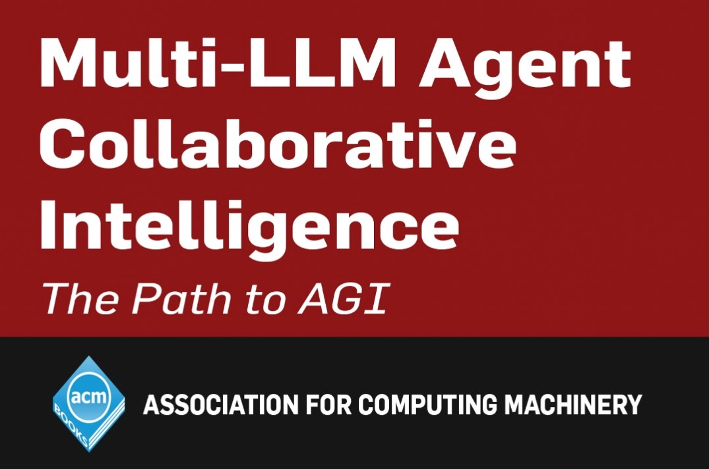

Two Paradigm Bridges: From LLMs to AGI
Expanded video summary for quick reference

Eight pillars of AGI (MACI system-2 scaffold)

Overview
The talk urges new researchers to move past limitations of next‑token prediction. It first critiques the System 1 nature of current LLMs, then proposes two bridges: UCCT for semantic anchoring that shapes a task‑conditioned posterior, and behavior‑aware multi‑agent debate that regulates contention to convert information exchange into progress.
Critique of Current LLMs
System 1 without grounded semantics [02:11]
- LLMs are trained for next‑token prediction and operate as high‑dimensional pattern repositories.
- Patterns are not the same as semantics. Output often reflects frequency rather than meaning.
Patches that do not supply real reasoning
- Chain of Thought is described as a prompt pattern, not a formal reasoning method [03:32].
- RLHF is instance‑based and context‑dependent with a forgetting effect that undermines stability [04:23].
Fixed prior favors popularity over accuracy [13:05]
Training sets a prior over patterns. Without additional control, the model may converge to popular answers when they diverge from accurate ones.
Paradigm Bridge 1: Unified Cognitive Consciousness Theory (UCCT)
UCCT proposes adding System 2 control over System 1 by using semantic anchoring to shift the model from a fixed prior to a task‑conditioned posterior.
Semantic anchoring as a control handle [12:40]
- Provide concrete examples or intents as anchors that steer the distribution the model samples from.
- Anchors act like bait that select compatible latent patterns while suppressing incompatible ones.
Inferencing rather than formal reasoning [14:16]
Given anchors 2−3=5 and 10−4=11, a query 15−8 is interpreted as 15+8, producing 23. The model adapts to the anchor pattern rather than obeying subtraction rules.
Unconscious pattern repository [22:04]
- The pre‑trained model stores a vast unconscious of patterns gathered from large corpora.
- Few examples can form an on‑the‑fly classifier by activating relevant regions in this repository, similar to a child learning the concept of cat from a handful of labeled images.
Phase transition behavior [25:50]
- Anchoring exhibits a threshold effect. Once anchoring strength and pattern density exceed a level, behavior shifts sharply.
- Below threshold, outputs drift back to the prior; above threshold, the posterior is stable for the task.
Paradigm Bridge 2: Modulating Behavior in Multi‑Agent Debate
To turn debate into discovery, regulate behavior in addition to exchanging information.
Debate needs behavior control [31:42]
- Key variable is contentiousness. It governs whether agents explore, converge, or stall.
Contentiousness schedule [32:18] [34:04] [34:39]
- Too contentious: agents talk past each other without synthesis.
- Too agreeable: friendly chat lacks novelty and rigor.
- Target schedule: begin with high exploration, then lower contention to enable exploitation and integration.
Emulable tone and emotion [36:04]
- Training data contain stylistic and affective patterns. Models can emulate tone and emotional stance.
- Use this lever to shape debate dynamics and improve planning and reasoning outcomes.
Full summary
Thesis. Current LLMs behave like System 1 pattern matchers. Real progress toward AGI requires two bridges: (1) UCCT uses semantic anchoring to construct a task‑conditional posterior and enables on‑the‑fly classifiers from the unconscious pattern store; (2) Multi‑agent debate must be behavior‑aware, with contentiousness modulated over time to evolve from breadth to depth.
Motivation. Band‑aid improvements such as CoT and RLHF do not supply grounded semantics or stable reasoning. A mechanism is needed to control distributional behavior at inference and to orchestrate agent interactions.
Bridge 1 details. Anchors select and reweight latent patterns. Sufficient anchor strength and pattern density cause a phase transition that stabilizes the posterior. The arithmetic example illustrates inferential shift under anchoring rather than rule‑based deduction.
Bridge 2 details. Debate without behavior control becomes either unproductive conflict or shallow agreement. A scheduled modulation of contentiousness turns exploration into exploitation and supports convergence on stronger arguments and plans.